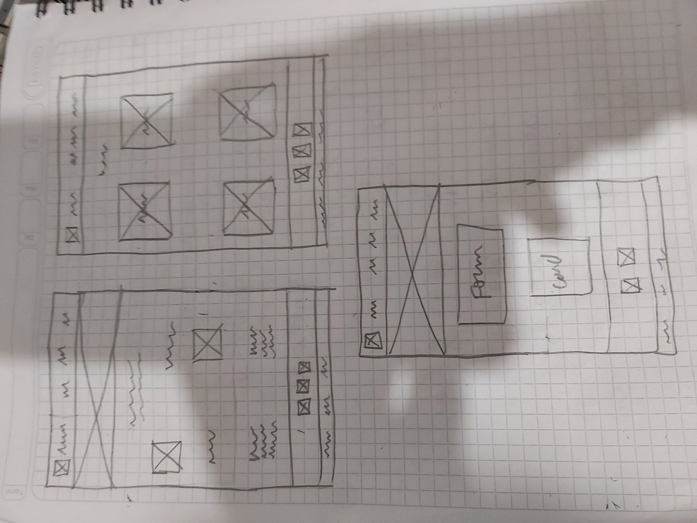

Overview
Purpose
We are here to make all your moments sweeter
Branding
Website Logo

Style Guide
Color Palette
Palette URL: https://coolors.co/ab9e49-d4cb92-80a4ed-cbdef6
| Primary | Secondary | Accent 1 | Accent 2 |
|---|---|---|---|
| #AB9E49 | #80A4ED | #CBDEF6 | #D4CB92 |
Typhografy
heading Font: Constantia
This is a clean and readable font.
Paragraph Font: calibri
This is a clean and readable font that goes perfectly with the first chosen font.
Once you cook one dessert you won't stop!
A dessert can do more than make your stomach satisfied! Desserts are a huge part of our life. They bring up memories of family gatherings, laughs and warm chats. Desserts bring families together and strengthen their bonds. When you cook one dessert you are creating memories!
Where they come from?
Latin American sweets have their own History. We will walk you through the tradiitions that led to the creation of these sweets.
Navigation
Wireframes
